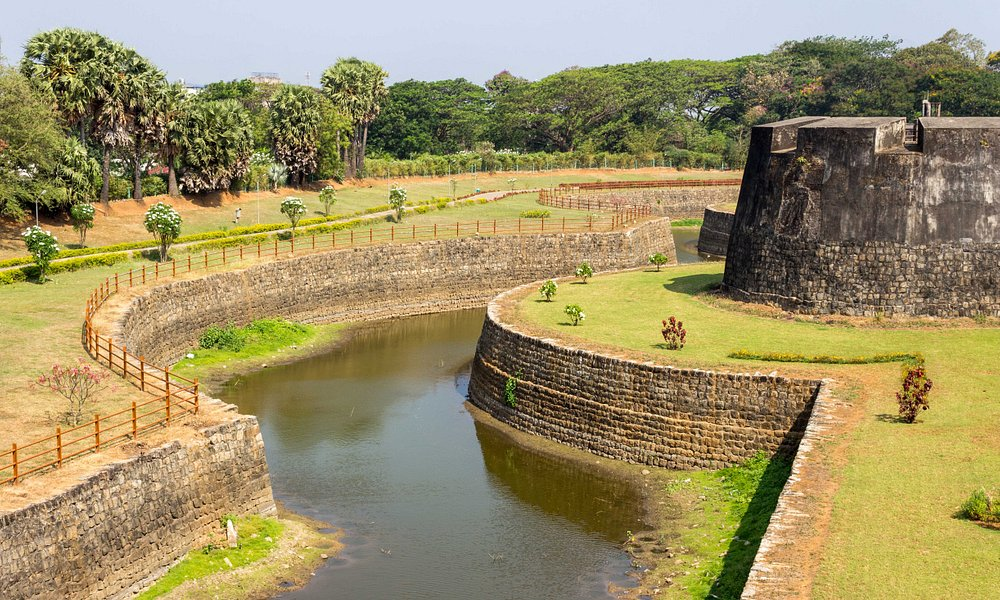

Malampuzha Dam
The largest dam and reservoir in Kerala

Nelliyampathy Hills
A hill station in Palakkad district

Palakkad Fort
An old fort situated in the heart of Palakkad town
Previous
Next
Palakkad , also known as Palghat, is a city and municipality in the state of Kerala in India,
spread over an area of 26.60 square kilometres (10.27 sq mi); it is the administrative
headquarters of the Palakkad District. The city is situated about 350 kilometres (220 mi)
north of state capital Thiruvananthapuram and 50 kilometres (31 mi) southwest of Coimbatore
in Tamil Nadu, and 66 kilometres (41 mi) northeast of Thrissur on the Salem-Kanyakumari
National Highway NH 544. Palakkad is also known as the rice bowl of Kerala. The 18th-century
Palakkad Fort has sturdy battlements, a moat, and a Hanuman temple on its grounds.North, on
the Kalpathy River, the 15th-century Viswanatha Swamy Temple is the main venue of the famous
Ratholsavam chariot festival. Northeast, near Malampuzha Dam, the town of Malampuzha has
a rock garden created from recycled materials.
Did You Know??
- Palakkad is the gateway to Kerala due to the presence of the Palakkad Gap in the Western Ghats
- Palakkad, the largest producer of rice is known as the granary of Kerala
- Palakkad is the largest district in Kerala
Malampuzha Dam
Malampuzha Dam is the largest dam and reservoir in Kerala, located near Palakkad, in the state
of Kerala in South India, built post independence by the then Madras state. Situated in the
scenic hills of the Western Ghats in the background it is a combination of a masonry dam with
a length of 1,849 metres and an earthen dam with a length of 220 metres making it the longest
dam in the state.The dam is 355 feet high and crosses the Malampuzha River, a tributary
of Bharathappuzha, Kerala's second longest river.
Read More
Nelliyampathy Hills
Nelliyampathy (also spelled Nelliampathi) is a hill station 60 kilometres (37 mi) from Palakkad,
state of Kerala, India.Nelliampathy is surrounded by tea and coffee plantations. The village
has its own gram panchayat and forms a part of the Chittur taluk. Pothundi Dam, which was
constructed in the 19th century, is the entrance to Nelliyampathy.A viewpoint called Seethargund
is situated 8 km away from Nelliyampathy. Seethargund, according to beliefs is the place where
Lord Rama, Laxmana and Seetha rested during their exile.
Read More
Palakkad Fort
Palakkad Fort is an old fort situated in the heart of Palakkad town of Kerala state, southern India.
It was recaptured and rebuilt grandly by Sultan Hyder Ali in 1766 ACE and remains one of the best
preserved forts in Kerala.The Palakkad Fort is said to have existed from very ancient times, but
believed to be constructed in present form in 1766 A.D, but little is known of its early history.
The local ruler, Palakkad Achchan, was originally a tributary of the Zamorin, but had become
independent before the beginning of the eighteenth century
Read More